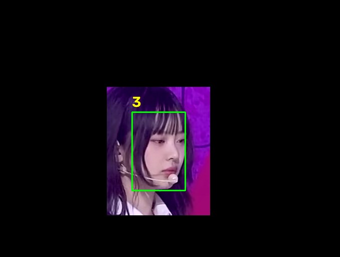

얼굴 포커싱 직캠 모듈
기간
2025.05 – 2025.06
분류
컴퓨터 비전수업 과제
도구
Python, OpenCV, InsightFace
한 줄 소개
고른 사람의 얼굴을 따라가며 확대한 영상을 저장하는 모듈


원본은 방송 무대 영상이며 저작권은 원저작자에게 있습니다. 과제 시연용으로만 사용했습니다.
2025년 5월~6월, 영상처리 강의 과제. InsightFace(SCRFD)로 영상 속 얼굴을 검출해 번호를 붙이고, 고른 사람의 얼굴 주변을 잘라 확대한 직캠 영상을 저장합니다. 확대 정도는 트랙바로 조절합니다. Python, OpenCV, InsightFace.